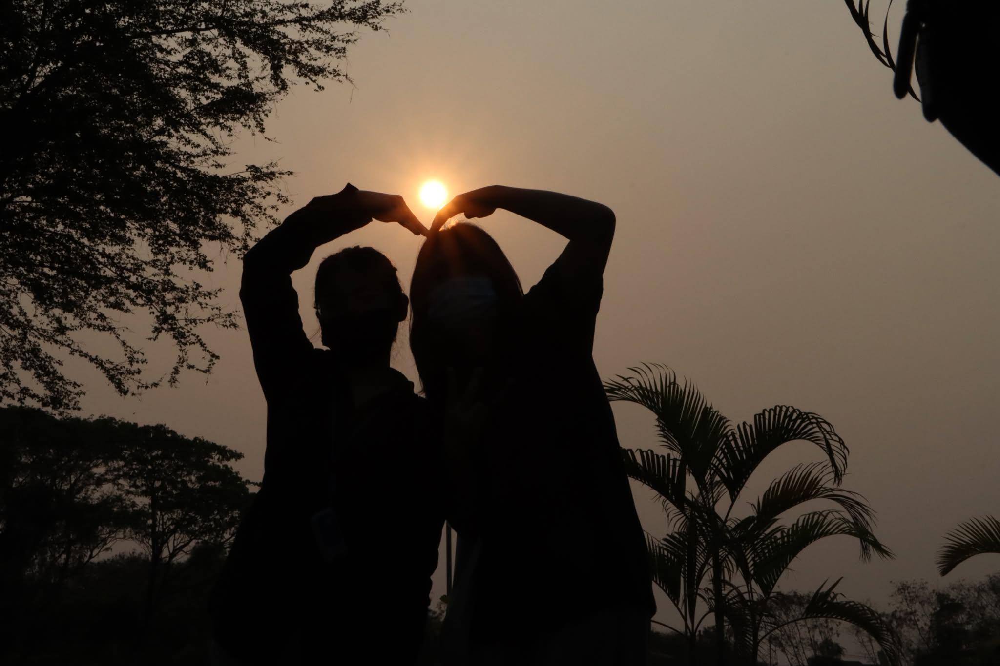
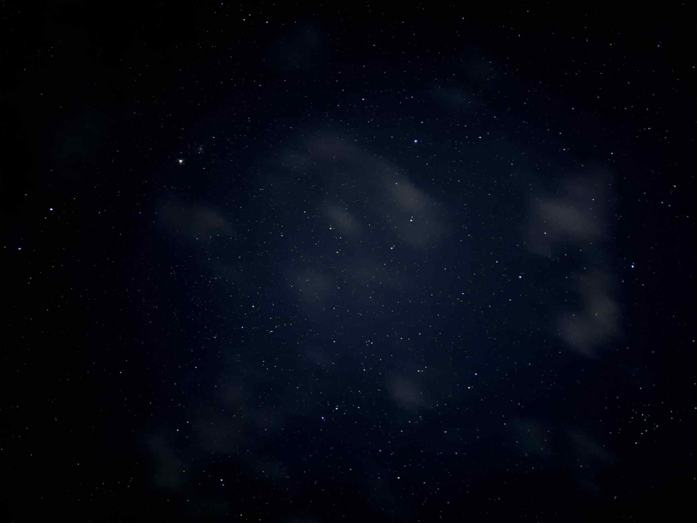
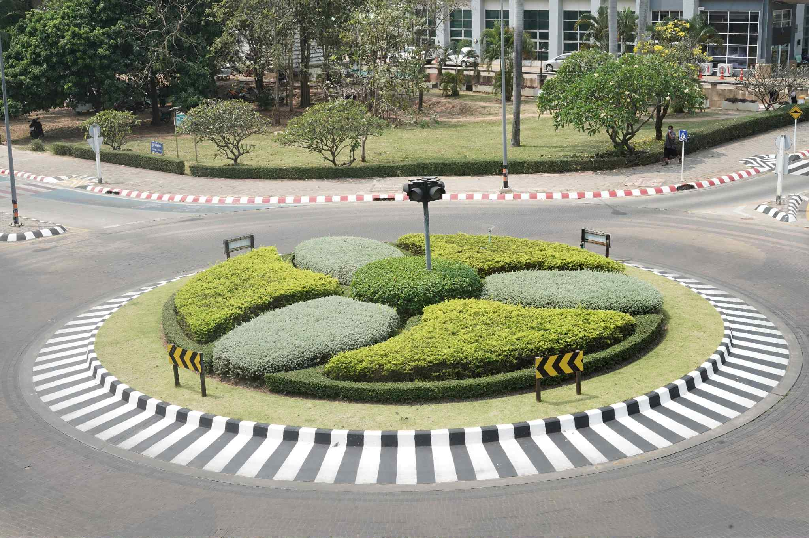

Eternal Light
Silhouette Photography
wo friends forming a heart with the setting sun, turning a fleeting moment into a timeless symbol of connection.
Sad Starry Night
Astrophotography
A lonely night sky, where countless stars shine but still carry a sense of silence and melancholy.
Circle of Order
Architectural
A perfectly trimmed roundabout, where nature and structure meet in a harmonious balance of design.